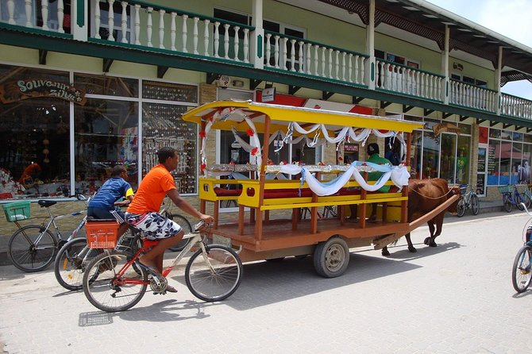

What to do in La Digue?
A trip to La Digue is a vacation centered towards relaxation. Most of what is available to do on the island includes relaxing on the beautiful beaches and exploring some of the surrounding islands. There are some hiking/bike trails and wildlife areas. If you would like to discover more to do while visiting La Digue, click the image to the left.
Where is La Digue?
La Digue is a small island in the Seychelles. The Seychelles is a group of small islands off the eastern coast of Africa. If you would like to see a more detailed map of La Digue, click the image to the right.
How to get to La Digue?
The nearest airport to La Digue is Praslin Island Airport. From Praslin Island Airport you would take a ferry to La Digue. If you want to learn more about your options of travel to La Digue, click the image to the left.


Want to see more images of La Digue? Click the image to the right!